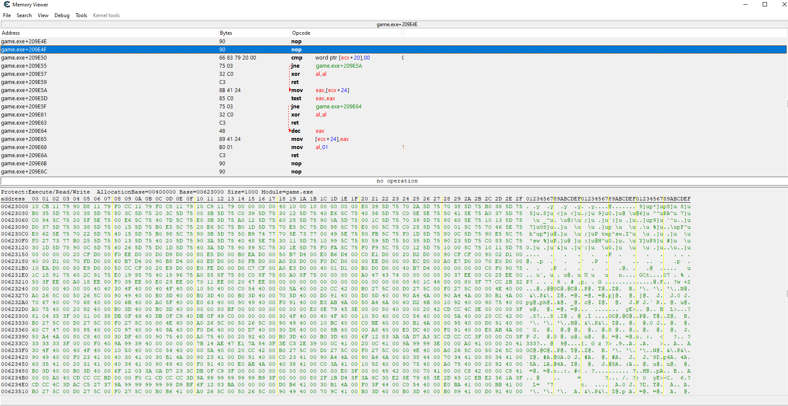
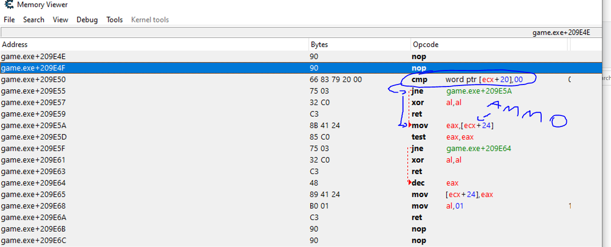
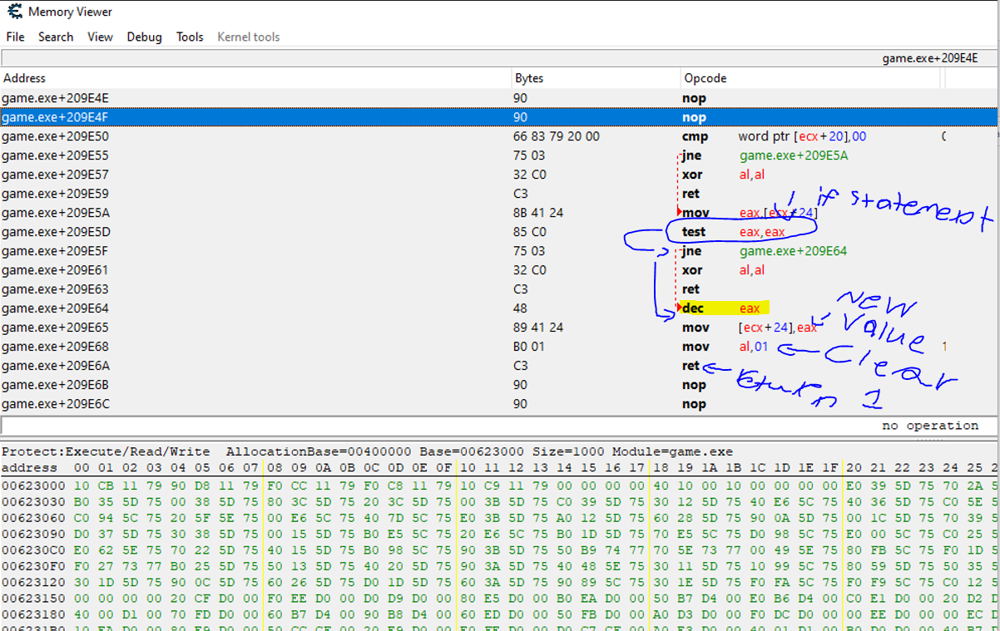

In this blog, I will show you a simple walkthrough through x86 assmebly reverse engineering using cheat engine.
Heres what we are going to take a look at today. Feel free to zoom in if you cant see it.
first the instruction "cmp word ptr[ecx + 20], 00" --- Checks if we have a weapon currently in our hand. this would look like if(gun == nogun) the jne --- jumps if not equal to. since we have a gun it will jump because its not equal to no gun. Therefore leading us to eax that will contain our ammo. the instruction "mov eax,[eax + 24]" will move our current ammo "eax + 0x24" into eax on the left. eax usually holds integers for now atleast.
which brings us to the "test eax, eax", which will check if our ammo is zero or not. since our ammo is not zero that takes us to jne instruction right below it. that present jne instruction will now jump to dec eax which will decrease our ammo. from there we place the new value of eax into the ammo address value mov [eax + 0x24], eax finally from there we get to "mov al, 01" which is equivalent to return 1, or return true
Also you will see xor al, al sometimes. This is because none of the jump instructions were true so we cannot proceed on, we must forget things that happen. And must cleanse ourselves. This just clears the last 8 bits of eax. So basically returning 0.
good website for context
here---------DISASSEMBLY----------- // calling this function with a hook will just decrease our ammo without shooting char __thiscall ammoDecreaseOperation(int this)
{ int curAmmo; // eax if ( !*(_WORD *)(this + 0x20) ) // if has weapon, weapon is written as enums so zero is no weapon return 0; curAmmo = *(_DWORD *)(this + 0x24); if ( !curAmmo ) // if ammo equal to zero return 0; *(_DWORD *)(this + 0x24) = curAmmo - 1; // modifying the ammo variable return 1; }
Written by jud(qerj)